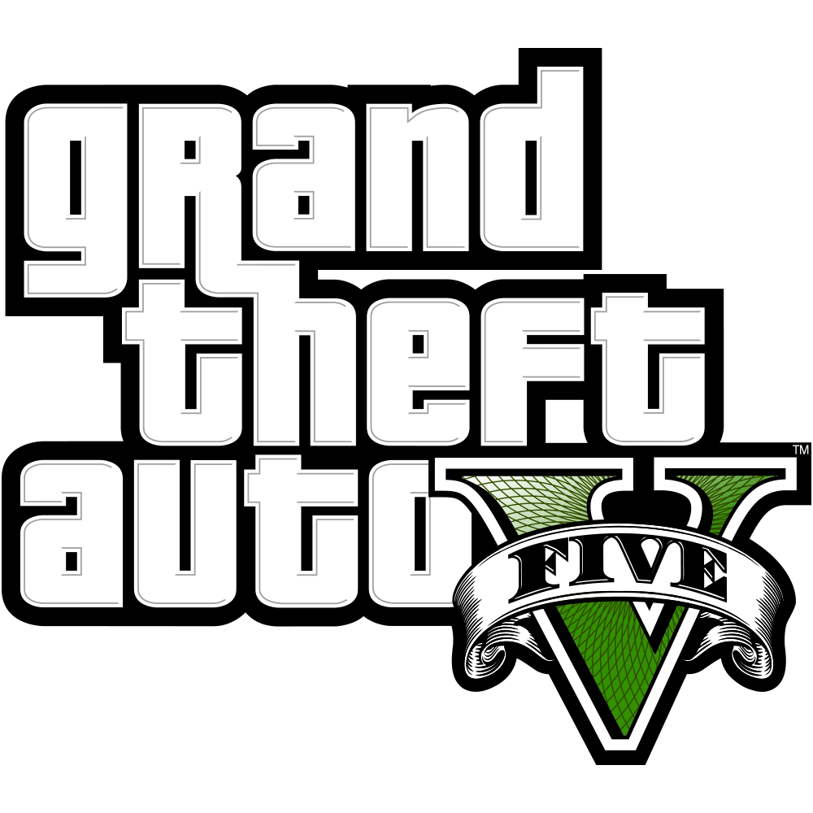

Los VideoJuegos Mas Exitosos
Los videojuegos son un sector que está en constante crecimiento y que, a día de hoy, facturan más dinero que el cine, la literatura y la música juntos. En este contexto, nunca está de más hablar sobre los videojuego más vendidos de la historia
Minecraft

Con más de 200 millones de copias vendidas desde su lanzamiento en 2011, es el videojuego mas vendido de la historia hoy en dia,
Minecraft es un videojuego en el que los jugadores pueden crear diferentes estructuras como edificios usando materiales que consiguen en el mundo que los rodea
Su precio en pc es de 25$ Dolares
Tetris(1984)

Tetris (1984) es el juego de puzles por antonomasia. Un símbolo de los videojuegos y que cuenta con multitud de adaptaciones y nuevas versiones. Uno de esos clásicos a los que siempre volvemos y que, a día de hoy, ha vendido más de 170 millones de copias.
Plataformas: Game Boy, Nintendo Entertainment System
Su precio de salida fue de 15$ Dolares
Grand Theft Auto V

El tercer videojuego más vendido de la historia es la quinta entrega de la franquicia de Rockstar. Un juego que nos ha acompañado ya en tres generaciones de consolas distintas y que, cada año, sigue estando en las listas de juegos más vendidos.
En este top, Grand Theft Auto V (2013) obtiene el bronce con más de 130 millones de copias vendidas.
Su precio en Pc es de 15$ Dolares
Wii Sports
Nintendo supo ver el potencial de los juegos familiares y cooperativos antes que nadie. Wii Sports (2006) es eso y, además, acompañaba a una de las consolas más vendidas de la compañía nipona.
Este juego ocupa el cuarto lugar de este top con unas cifras de ventas que superan los 82 millones de copias.
Su precio de salida era de 25$